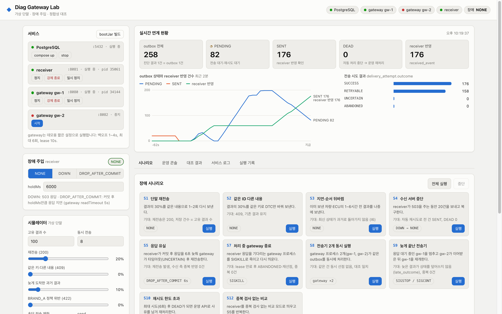
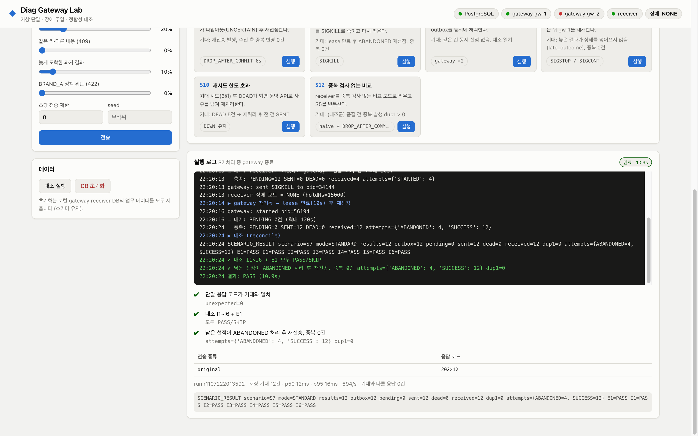
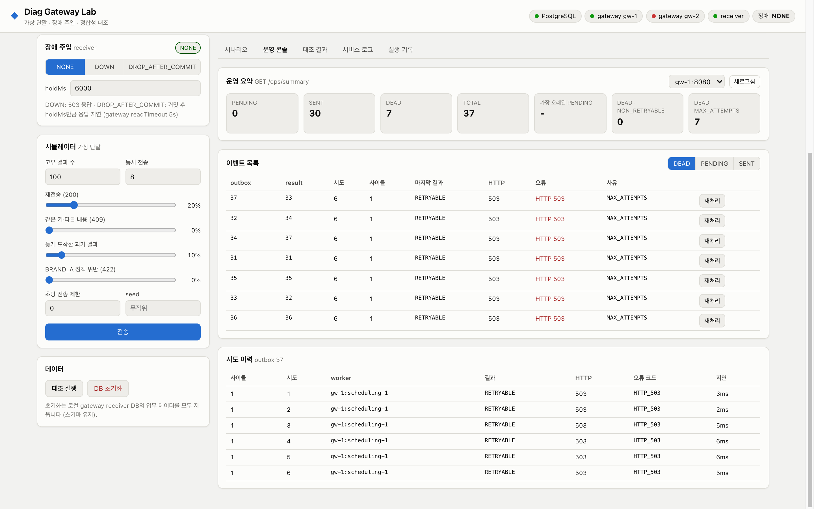

Gateway는 저장과 전달을, Receiver는 이벤트의 멱등 반영을 담당합니다.
차량 · ECU · DTC
시나리오 테스트로 요청
202 응답 이후에도 전송 상태를 별도로 추적합니다.
진단 결과와 Outbox를
한 트랜잭션으로 기록
작업자가 선점해 전달
실패 시 조건에 따라 재시도
Receiver의
반영 확인 응답 수신
자동 전송 중단
운영 확인·재처리 필요
커밋 후 응답 유실 → 같은 ID로 재전송 → 수신 측에서 중복 확인
선점과 결과 기록은 짧은 트랜잭션으로, HTTP 호출은 트랜잭션 밖에서 처리합니다.
전송 예정 시각에 도달한
Outbox 이벤트
SKIP LOCKED · 새 claim token
시도 횟수 증가 후 HTTP 전송
신규 반영 또는 동일 이벤트의
기존 반영 확인
백오프 + 지터로 재예약하거나 lease 만료 후 재선점합니다.
DEAD로 중단하고, 운영자가 사유를 남겨 재처리합니다.
이전 작업자의 응답이 늦게 도착해도 현재 토큰과 다르면 상태 갱신을 차단합니다.
선점은 별도 상태가 아니라 PENDING에 lease와 소유권을 부여하는 방식입니다.
20건의 이벤트를 커밋한 뒤 응답을 보류하고, 같은 이벤트를 다시 전송했습니다.
진단 결과 수집부터 차량 이력 관리, 품질 시스템 전달까지 구현한 백엔드 프로젝트
차량 식별 정보와
ECU별 진단 결과를 받습니다.
브랜드별 규칙을 확인하고
차량의 진단 기록을 쌓습니다.
ECU·고장코드 정보를
품질 건으로 반영합니다.
진단 데이터와 시스템 연계에 필요한 기능을 두 개의 독립된 서버로 구현했습니다.
차량·ECU·고장코드 저장
같은 진단 결과의 재수신 처리
공통 검증과 브랜드 정책 분리
SW 버전 등 필수 항목 확인
진단 당시의 관측 정보 보존
ECU별 최신 상태 관리
ECU·고장코드를 품질 건에 반영
반복 전송의 중복 반영 방지
전송 상태·실패 원인 확인
전송 시도별 처리 이력 조회
일시적 장애 시 자동 재시도
사유를 남기는 수동 재처리
차량 진단 결과를 받아 이력으로 쌓고, 고장 정보를 품질 시스템으로 빠짐없이 · 중복 없이 전달하는 연계 게이트웨이

품질 시스템에 전달되지 않은 진단 결과
재전송·응답 유실에도 중복 생성된 품질 건
서버 강제 종료·중단·응답 유실 시나리오 통과
서버 강제 종료, 품질 시스템 중단, 응답 유실을 실제 프로세스에 일으키고 두 시스템의 데이터를 대조합니다.

전송 중인 게이트웨이를 SIGKILL로 종료하고 재기동합니다. 남은 작업을 넘겨받아 12건 모두 전달하고, 중복 0건을 자동으로 판정합니다.

재시도 한도를 넘은 건의 실패 원인과 시도 이력을 확인하고, 사유를 남겨 다시 처리합니다. 처리자와 사유는 감사 기록으로 남습니다.
각 시나리오는 데이터를 비운 뒤 장애를 일으키고, 게이트웨이와 품질 시스템의 데이터를 대조해 누락·중복을 판정합니다.
같은 결과를 1~2회 다시 보냄
번호는 같고 고장코드만 바뀜
1~6시간 전 결과가 나중에 도착
중단 중 20건 접수 후 복구
저장 후 응답이 오지 않음
SIGKILL 후 재기동
게이트웨이 프로세스 2개
SIGSTOP → 다른 서버가 처리 → 재개
중단 유지 → 자동 처리 중단
S5와 같은 장애, 방어 없음